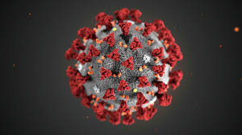

Короновирусная инфекция - инфекция, вызываемая коронавирусом SARS-CoV-2. Представляет собой опасное заболевание, которое может протекать как в легкой, так и в тяжёлой форме. Первые сообщения о вспышке нового вируса, схожего с SARS, появились в декабре 2019 года в городе Ухань. Вирус способен инфицировать многих млекопитающих, в том числе и человека. Распространяется воздушно-капельным путем, а также через контакт с зараженным или поверхности, на котором находится коронавирус.
Лечение коронавируса не обладает своей особенностью. При легкой форме следует не напрягать свой организм и соблюдать постельный режим, а также пить побольше воды. Врач также поможет определить, есть ли у вас еще какая-нибудь вторичная бактериальная инфекция, это не менее важно, так как она осложняет течение COVID-19. При дыхательной недостаточности человека подключают к аппарату ИВЛ. То есть, лечение поддерживающее.
Иммунитет к коронавирусу вырабатывается, более того, он сохраняется на протяжении длительного времени. Это доказывает то, что крайне мало людей повторно инфицируются. Их в какой-то тепени можно назвать частными случаями.Иммунитет сохранется потому, что прибретаются B-клетки памяти, которые в случае повторного заражения уничтожат вирус.
На данный момент вакцина от коронавируса существует,, притом есть она у России. Это Спутник V и ЭпиВакКорона. Спутник V первая вакцина в мире ей пользуются массово за границей. Однако у нас ей прививаются очень мало. ЭпиВакКорона это вторая вакцина, предназначенная для вакцинации онкобольных людей и аллергиков.
Курение ни в коем случае не защищает от риска, более того, есть основные заболевания, которые обуславливают тяжелое течение и способствуют развитию тяжелых осложнений, вплоть до летального прогноза, много публикаций по этому поводу
Алкоголь также не делает с человеком ничего хорошего. Напротив, только усугубляя течение болезни. Напоследок, антибиотики бесполезны против коронавируса, так как коронавирус - это вирус, а антибиотики борятся только против бактерий. Их стоит принимать, когда у вас помимо коронавируса есть вторичная бактериальная инфекция, и то это нужно делать только по наставлению врача. НЕ ЗАНИМАЙТЕСЬ САМОЛЕЧЕНИЕМ!!!!